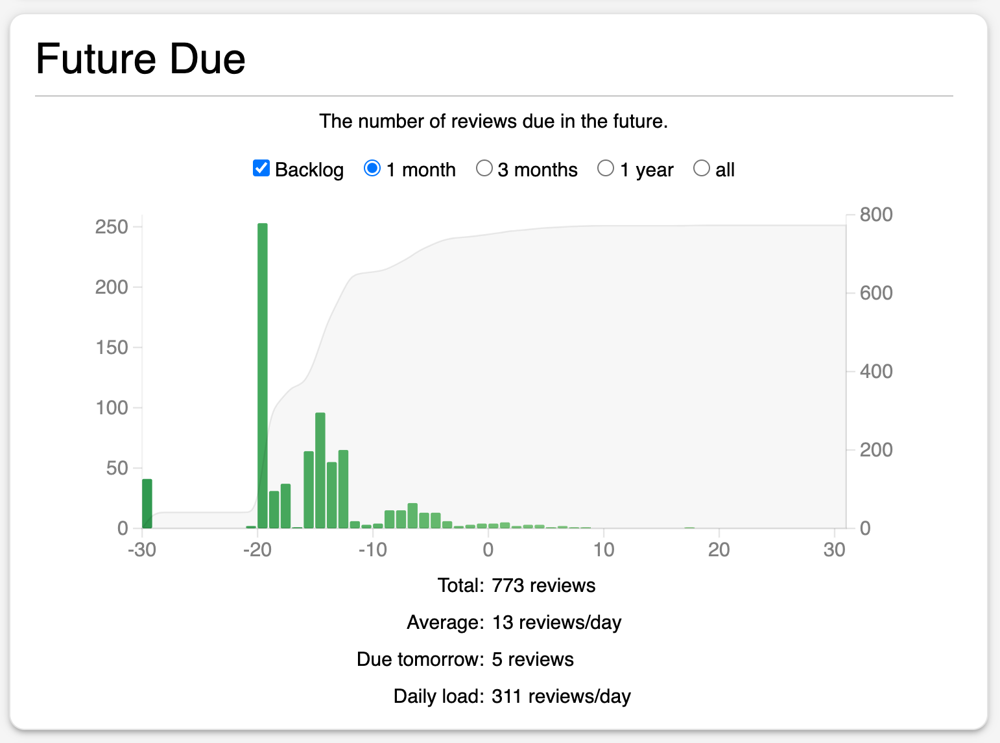
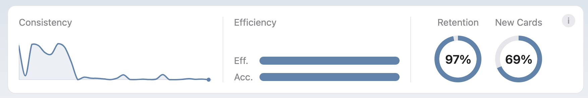

When daily reviews become unmanageable, pause or reduce new cards first. New material creates tomorrow’s reviews. Changing several scheduler settings at once may make today’s number look better while leaving the underlying intake untouched.
Separate daily load from a backlog
These problems can look identical on the deck screen but require different responses:
- High daily load: even when fully caught up, the collection generates more reviews than your available time supports.
- Backlog: overdue cards accumulated after missed days, an unusually busy period, or review limits that hid due work.
- Slow reviews: the card count is reasonable, but ambiguous or overloaded cards consume too much time.
Anki’s Future Due statistics distinguish upcoming reviews from overdue work. Daily load estimates the average contribution of current cards; it does not include a large existing backlog in the same way.

Step 1: reduce new-card intake
This is the highest-leverage change because every new card adds learning steps and future reviews. The official Anki deck-options guide notes that consistently learning twenty new cards per day can lead to roughly two hundred daily reviews, although the real ratio varies.
If you are behind, set new cards to zero temporarily or reduce them sharply. Resume only after due reviews fit your normal study time for several days. This is not lost progress; it protects the material already introduced.
Step 2: clear overdue cards in controlled blocks
Do not try to erase a large backlog in one exhausted session. Keep current due work visible, then add a defined recovery block. A filtered deck can isolate overdue cards or a specific topic without permanently moving them; the Anki manual documents filtered decks for catching up and focused study.
- Pause new cards.
- Protect a normal block for cards due today.
- Add one short backlog block you can repeat daily.
- Use honest ratings even when the queue is large.
- Stop when answer quality falls; rushing creates more relearning later.
A timer can create a stopping boundary, but it should not become a cards-per-minute target. The Anki Pomodoro workflow explains how to size blocks for routine reviews and backlog recovery.
Step 3: remove repeated friction from cards
Review counts alone do not reveal whether the workload is productive. Inspect cards that repeatedly fail or take unusually long. Typical repairs include:
- splitting a prompt with several independent answers;
- removing accidental clues and ambiguous wording;
- adding the contrast between two commonly confused concepts;
- suspending details that no longer serve the learning goal;
- returning to the source when the underlying idea was never understood.
Repair a sample first. If the same defect appears repeatedly, apply a consistent card-design rule to the rest of that material.
Step 4: evaluate desired retention carefully
Higher desired retention creates shorter intervals and more reviews. If your target is unusually high, reducing it modestly may lower workload—but do not use this as the first response to uncontrolled new-card intake or poor card design.
Use Anki’s simulator to compare reviews or minutes per day under different targets, and use “Help Me Decide” as an additional reference. Our guide to choosing Anki desired retention walks through that decision.
Why review limits are not the main fix
A maximum-review limit can cap what appears today, which may be necessary during a temporary constraint. But hidden due cards remain due. If the cap stays below the collection’s incoming load, the backlog grows behind the smaller number.
| Change | What it solves | What it can hide |
|---|---|---|
| Lower new cards/day | Reduces future workload growth | Nothing; the effect is gradual |
| Backlog recovery block | Processes overdue work sustainably | Requires time and consistency |
| Repair or suspend cards | Removes unproductive repeated effort | Can become over-editing without sampling |
| Lower review maximum | Caps today’s visible workload | Overdue cards accumulating behind the cap |
| Adjust desired retention | Changes the recall/workload tradeoff | Does not fix weak cards or excessive intake |
Use a weekly capacity check
Once the queue stabilizes, choose a weekly review point. Compare daily load, due-card completion, review minutes, new-card intake, and a small sample of slow or failed cards. Change one driver, then give it enough time to produce a pattern.
A sustainable Anki system is not one with the smallest possible queue. It is one where due reviews, new learning, and card maintenance all fit the time you can repeatedly protect.

Plan the workload you can finish.
SynapsePro combines study planning, Pomodoro focus, and learning statistics inside Anki so review capacity can guide the next session.
Get SynapsePro free